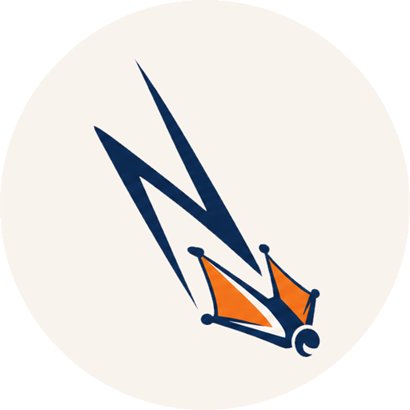

Nosedive
Pick what's next, and do it by the book.
Nosedive turns a plain notes repo into a bridge: a knowledge base and orchestration hub for agentic development across one or more implementation repos. Work is split into small vertical slices before anything is built, and what "done" looks like is captured as executable checks that agents can run to find out whether they are actually finished.
The problem
Agents can make code appear quickly. Getting from there to something we understand and are willing to ship still takes work.
A change can span days, people, agents, and repositories. When its context is scattered across tickets, chats, branches, and people's heads, three basic questions get harder to answer: What are we doing? Where did we leave off? How will we know it works?
Nosedive keeps the answers next to the work, so a human or an agent can pick it up without relying on one machine, one chat, or one person's memory.
Install
npm i -g nosediveRequires Node 22 or newer.
Quickstart
Start from a clone of a repo you control -- an empty GitHub repo on the free tier is enough.
git clone <your-notes-repo> ~/BASE && cd ~/BASE
git config user.name "Test Pilot"
git config user.email "test@nosedive.invalid"
nosedive seed
nosedive record.feat --gist "Add a hello note"
nosedive record.dive --feat add-a-hello-note --gist "..." --brief "..."
nosedive jump
# do the work in the hydrated workspace, and commit
nosedive pack # stopping partway; banks WIP as patches
nosedive jump # picks the same dive back up
nosedive land # pushes work/add-a-hello-noteEvery command prints a suggestion for the next one, so you can follow the prompts.
The vocabulary
- repo -- an implementation boundary.
- feat -- a goal we want to accomplish.
- dive -- one bounded attempt at that goal.
- gate -- a repeatable check on the work.
- memo -- durable information found by following a breadcrumb.